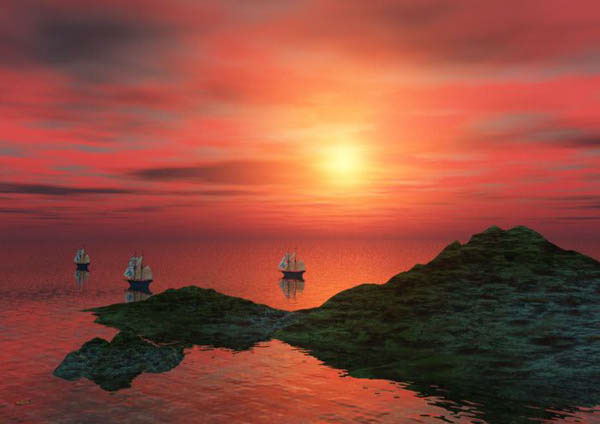
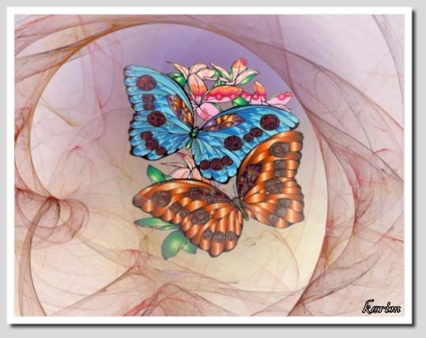
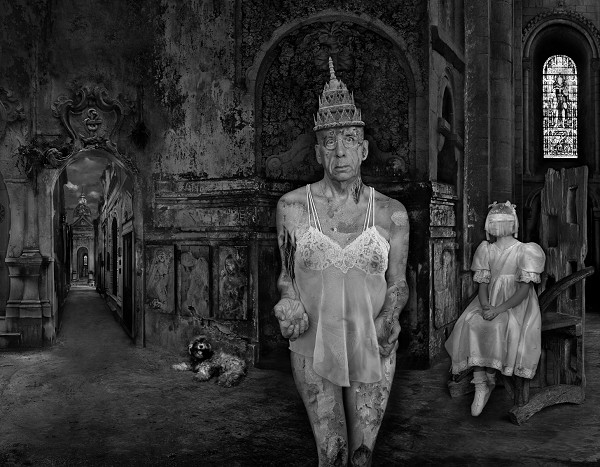
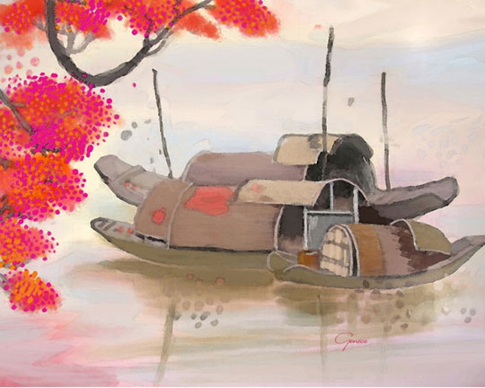
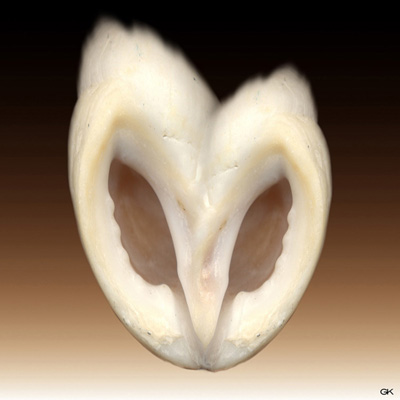
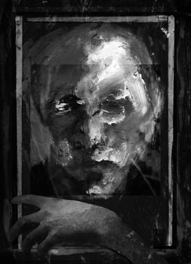

IMAGES OF THE DAY 67
04/21/2023 - 04/30/2023

Landscape Art
Tall Ships
lsc0020a
by Thomas Broadfoot
04/21/2023
Click image to access artist's full exhibit
Symbolist Paintings
Lamaisonbleue
by Jean Poumarede
04/22/2023
Click image to access artist's full exhibit

Algorithmic/Fractal
Hybrid Art
Organic Machine 01
by Virginia Small
04/23/2023
Click image to access artist's full exhibit

Digital Kunst 
Magic Butterflies
by Karim Bouchnak
04/24/2023
Click image to access artist's full exhibit
Photographic Art 
Ladies-in-waiting
by Dominic Rouse
04/25/2023
Click image to access artist's full exhibit
Sacred Places 
Boating in Stillness
by Genece Hamby
04/26/2023
Click image to access artist's full exhibit
Nature 
Wild
by Geraldine Keogh
04/27/2023
Click image to access artist's full exhibit
Digital Paintings
Image 3461
by Peter McLane
04/28/2023
Click image to access artist's full exhibit

Photo-based 
Dark Art
Box People
by Mike Bohatch
04/29/2023
Click image to access artist's full exhibit
Streets Transformed
Mona Lisa Bike Glasses
by Mario Pelletti
04/30/2023
Click image to access artist's full exhibit

BACK TO IMAGES OF THE DAY 66
NEXT